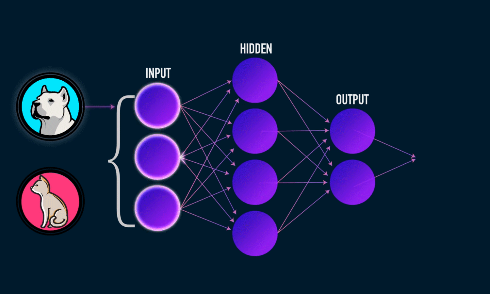

Research [1, 2, 3] shows you can combine XGBoost and CNNs to solve non-image classification problems. In this post, I adapt this model to show a shockingly powerful method for image classification.
Continue readingCNNs and Gradient Boosting for Image Classification
